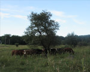
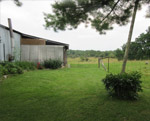
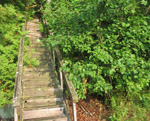
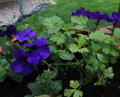

It was a hard year for gardening in Ontario. The amount of rain and cloud was hard on a lot of the plants. It was especially hard on the tropical plants that we can usaully have in our gardens during the summer, when it is hot enough. Flowers like hibuiscus and mandevillas were working hard to stay alive with the lack of sun and heat. Our Ontario native plants did seem to do better with the weather. They are more used to the ups and downs we see in this province.
| Time | Date | Weather | Percipitaion |
|---|---|---|---|
| 21:00 | June 16, 2017 | Overcast | Total: 2cm rain |
| 12:05 | July 3, 2017 | Sunny | Total: 0cm |
| 08:32 | August 23,2017 | Thunderstorm | Total: 6cm rain |
Most animals were happy with the rainy weather because it made their enviornments damp and greenery lushious!
 Unlike commerical enviornments farmers had to be aware of the daily weather changes to keep their crops happy and healthy.
Rural areas were largely effected by the rain this year. A lot of the people who live in rural areas rely on their own crops to feed their families.
 Plants in the city like planters outside of resteraunts and banks had to be looked after very carefully.
{kind=link}
{kind=link}
{kind=link}
{kind=link}